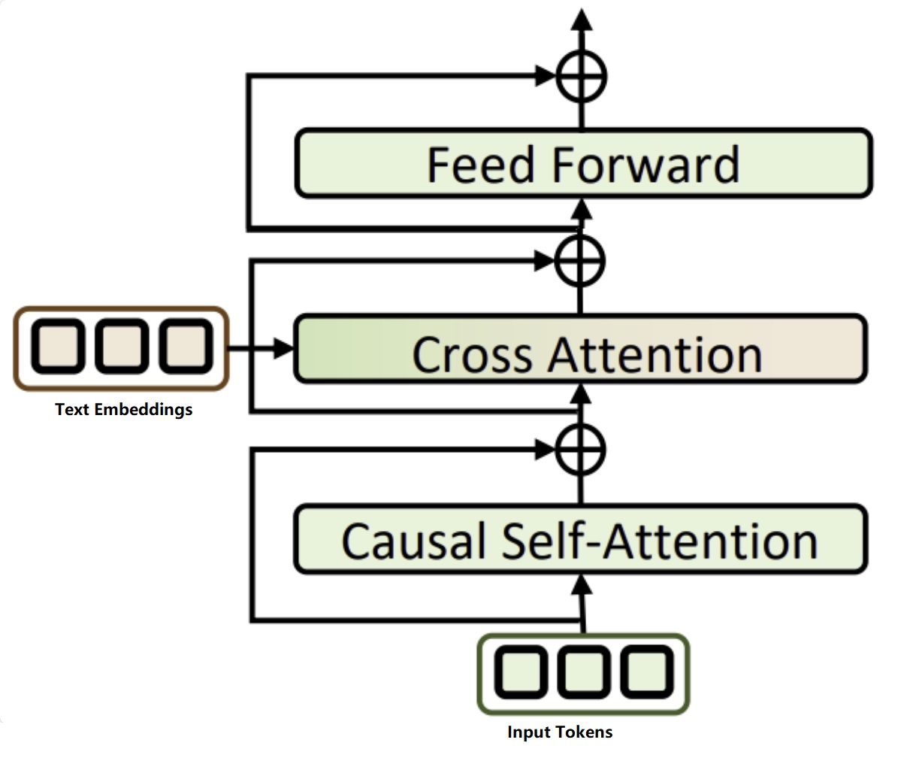
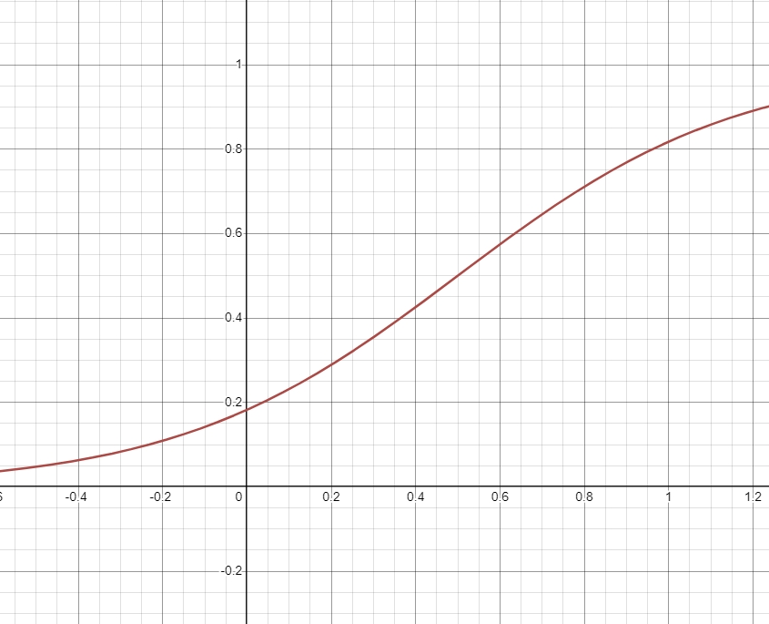

T2M-model-improvements
*In this article, I will focus on the key improvements I have led, though these are not all the enhancements we have made to the product.
1 Temporal-Aware Text Encoder

Figure 1. Text Tokens Through Cross Attention
In most state-of-the-art models, such as MDM, MLM, MoMask, and T2M-GPT, the CLIP text encoder is commonly used as a frozen pre-trained text encoder. However, a significant issue with CLIP's text encoder is that, to align text and visual embedding spaces, it sacrifices sequential information in favor of emphasizing spatial relations. Since images contain only spatial information, this approach can lead to a loss of important sequential context in text data.
Motion data, which is inherently sequential, exacerbates this issue. For example, when a description contains multiple actions, such as "a man doing a cartwheel and running away," the model may struggle to generate the "running away" part or, in some cases, may reverse the action order, producing "running away" before "doing a cartwheel."
To address this issue, we have experimented with replacing the text encoder with a more powerful interpreter, such as MPNet, and explored using the full token sequence via cross-attention layers. as shown in Figure 1.
After implementing these changes, we observed the following improvements:
3 LLM+RAG for prompt optimization
 Figure 2. Prompt Optimizer Pipeline
Figure 2. Prompt Optimizer Pipeline
In practice, users' inputs can be unpredictable, and it is unrealistic to expect them to provide informative, well-organized prompts free of typos. We have extracted some user prompts and analyzed the differences between real-world user prompts and the ground truth prompts used to train our model.
To address this issue, we leverage LLM models to correct typos and translate user prompts into English. We then use MPNet to convert these corrected prompts into embedding space and search our vectorDB to find the closest match in the training data. The vectorDB stores all vectorized training prompts.
We are not using this as a direct retrieval function. Instead of directly replacing the user's prompt with the closest match, we use the retrieved prompt as information to instruct the LLM to rewrite the user's prompt. This rewritten prompt maintains the same style as the retrieved sentence while ensuring that the actions align with the user's original prompt.
After implementing these changes, we observed the following improvements:
4 RAG during motion Inference
 Figure 3. motionRAG pipeline in different settings
Figure 3. motionRAG pipeline in different settings
In some cases, our model may misinterpret the prompt action and produce motions that do not match semantically. To reduce such occurrences, we can apply RAG to retrieve a segment of motion as a hint for the motion generator, guiding it to generate motions that align with the provided context.
There are several combinations we need to test for RAG-guided generation:
- Which model should we use for motion retrieval?
- Should we treat the retrieved tokens as replaceable?
- How should we integrate the retrieved tokens into the generation process?
To address these questions, we designed our experiments as follows:
- Model Comparison: We compared the performance of using MPNet's text-to-text similarity matrix to retrieve motion sequences from the database with using TMR's text-to-motion similarity matrix for the same purpose.
- Token Replacement: We created mask matrices to test whether retrieved tokens should be treated as replaceable or not, and compared the performance of these approaches.
- Token Integration: We experimented with two methods for integrating retrieved tokens: segment sampling and interval insert sampling. We used the transformed similarity score as the sampling ratio to determine the retrieval length.
sampling ratio formula is shown as below:
\[ y = \frac{1}{1 + e^{-k(x - 0.5)}} \]
where \(k\) is constant, \(x\) is similarity score where range is \( [0, 1] \). \(e\) is the base of the natural logarithm
The graph is illustrated in Figure 4.

Figure 4. sampling graph based on similarity value
We selected the best combination from all tested options and present its improvement results below.
5 Using beam search on Motion Variant Generation
In product, we provide variant motion generation results, we apply beam search to provide partial variants.
6 Reference
Team, G., Georgiev, P., Lei, V. I., Burnell, R., Bai, L., Gulati, A., Tanzer, G., Vincent, D., Pan, Z., Wang, S., Mariooryad, S., Ding, Y., Geng, X., Alcober, F., Frostig, R., Omernick, M., Walker, L., Paduraru, C., Sorokin, C., … Vinyals, O. (2024, August 8). Gemini 1.5: Unlocking multimodal understanding across millions of tokens of context. arXiv.org. https://arxiv.org/abs/2403.05530
Guo, C., Mu, Y., Javed, M. G., Wang, S., & Cheng, L. (2023, November 29). Momask: Generative masked modeling of 3D human motions. arXiv.org. https://arxiv.org/abs/2312.00063
Zhang, J., Zhang, Y., Cun, X., Huang, S., Zhang, Y., Zhao, H., Lu, H., & Shen, X. (2023, September 24). T2M-GPT: Generating human motion from textual descriptions with discrete representations. arXiv.org. https://arxiv.org/abs/2301.06052
Song, K., Tan, X., Qin, T., Lu, J., & Liu, T.-Y. (2020, November 2). MPNet: Masked and permuted pre-training for Language Understanding. arXiv.org. https://arxiv.org/abs/2004.09297
Petrovich, M., Black, M. J., & Varol, G. (2023, August 25). TMR: Text-to-motion retrieval using contrastive 3D human motion synthesis. arXiv.org. https://arxiv.org/abs/2305.00976